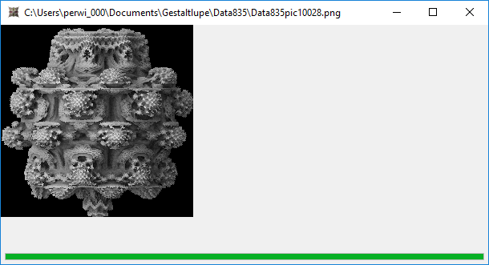

Each rendered scene and corresponding data is saved in local user folder. The corresponding path is shown in the header of the image window.

In most cases it is possible to zoom in an redered image by selection the zoom area with the mouse. After the left mouse button is released, the parameters are set and the small preview control shows the zoom area.
Most of modern browsers can display webGl scenes. The 3D structure of the rendered image can be shown by xhtml-export and open the export page in a webbrowser.
Scene:

Web GL scene.